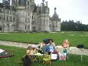
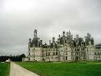
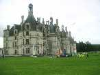
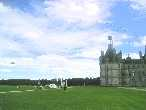
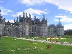
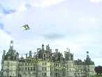
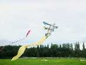
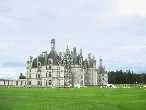

Et puis l'arche est montée et de plus en plus de cerfs-volants.
Nous n'étions pas le seul atelier : une association a reconstitué virtuellement en toile, plantes en pots et grillage habillé les jardins tels que dessinés autrefois.
Le Flow-form a aussi voulu voir le château de haut, et est resté là toute la sainte journée.
A part son gigantesque Flow-form bien connu (35 m de long), Vierzon (je crois bien) mettait aussi en vol ce beau CV bien architecturé. J'aime moins la couleur de la queue, même si, par son contraste uni, elle met en valeur le CV lui-même, mais le reste est très beau et original. Il s'appelle Anarlequin de sa "design"euse Anaelle, et héritera plus tard d'une queue blanche, ouf !
La journée a été belle, même si elle s'est terminée par une douche courte mais bonne et qu'on a bien vu arriver depuis l'horizon, on était prêts ! Ensuite, il a fallu replier.